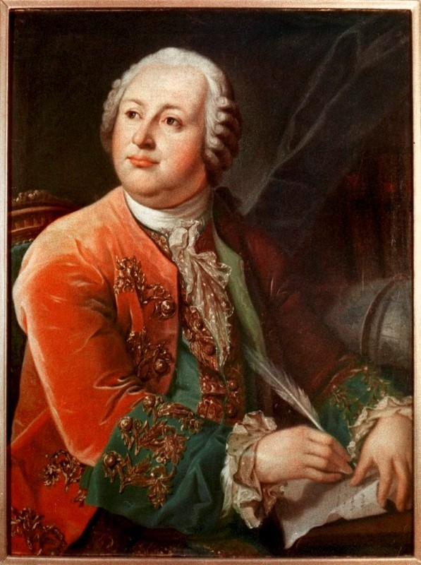

Mikhail Lomonosov (1711-1765)
Important things about him
Created a theory of three styles: high (ode), middle and low
His odes
Lyrical subject is the imperial subject, who is in awe of the power of the empress
